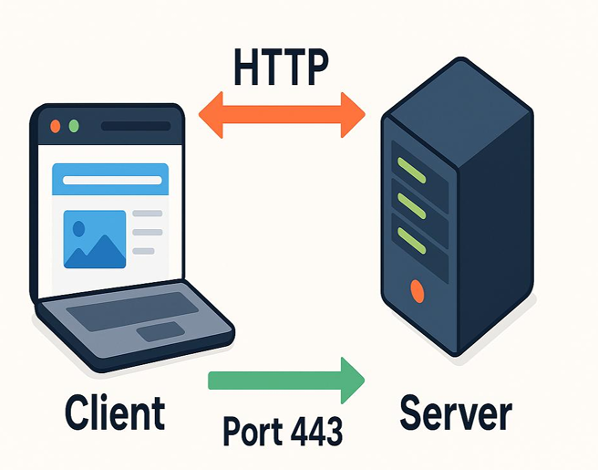
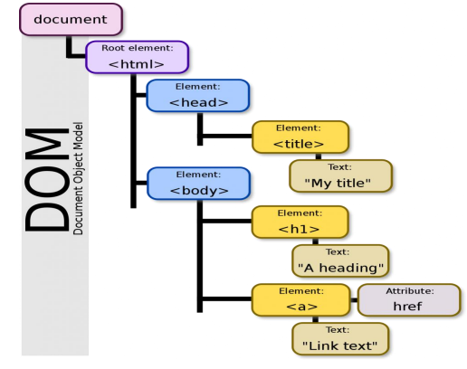

Proceso mediante el cual se diseñan, construyen e implementan páginas y aplicaciones
Aplicacion
En sectores como la educación, el comercio, la comunicación y la gestión empresarial, permiten almacenar, procesar y presentar información, permiten almacenar, procesar y presentar información.
Tecnologias
Estas tecnologías permiten estructurar el contenido, diseñar la apariencia visual y generar interacción con el usuario.
¿Qué es una pagina web?
Un documento digital, construido generalmente con HTML y puede incluir elementos como texto, imágenes, enlaces, videos y formularios
Tipos de páginas web
Páginas estáticas: Contenido fijo, no cambia a menos que el desarrollador lo modifique. Páginas dinámicas: Contenido que puede cambiar en función de la interacción del usuario o de datos externos.
Arquitectura CLIENTE-SERVIDOR
El cliente(navegador) envía solicitudes al servidor, que procesa las solicitudes y devuelve la respuesta correspondiente.

Protocolo HTTP
HTTP (HyperText Transfer Protocol) es el protocolo que se utiliza para la comunicación entre el cliente y el servidor en la web.
Es el protocolo que se utiliza para la comunicación entre el cliente y el servidor en la web.
Protocolo HTTPS
HTTPS (HyperText Transfer Protocol Secure) es la versión segura del protocolo HTTP, que utiliza cifrado para proteger la información transmitida.
HTTPS es una versión segura de HTTP que utiliza mecanismos de cifrado para proteger la información
Metodo GET
El método GET se utiliza para solicitar datos del servidor. Es el método más común y se utiliza para obtener información de una página web sin modificalos.
Metodo POST
El método POST se utiliza para enviar datos al servidor. Es comúnmente utilizado para enviar formularios y crear nuevos recursos en el servidor.
Puertos en la web
Los puertos son números que identifican servicios en una red. En la web, los puertos más comunes son:
- 80: Puerto por defecto para HTTP
- 443: Puerto por defecto para HTTPS
¿Qué es Git?
Git es un sistema de control de versiones distribuido que permite rastrear los cambios en los archivos y coordinar el trabajo en proyectos de desarrollo.
¿Qué es GitHub?
GitHub es una plataforma de alojamiento de código que utiliza Git para el control de versiones. Permite a los desarrolladores colaborar en proyectos, compartir código y gestionar versiones.
Configuracion de Git
Para configurar Git, se deben establecer el nombre de usuario y el correo electrónico:
git config --global user.name "Tu Nombre"git config --global user.email "tu.email@ejemplo.com"
Comandos básicos de Git
- git init: Inicializa un nuevo repositorio
- git add: Agrega archivos al área de preparación
- git commit: Guarda los cambios en el repositorio
- git push: Envía los cambios al repositorio remoto
- git pull: Obtiene los cambios del repositorio remoto
Tipos de control de versiones
Existen dos tipos principales de control de versiones: centralizado y distribuido. Git es un sistema de control de versiones distribuido.
SCV Centralizado
En un sistema de control de versiones centralizado, existe un servidor central que almacena el código fuente y los desarrolladores realizan cambios directamente en ese servidor. Ejemplo: Subversion (SVN).

SCV Distribuido
En un sistema de control de versiones distribuido, cada desarrollador tiene una copia completa del repositorio en su máquina local. Esto permite trabajar de manera independiente y luego sincronizar los cambios con el repositorio remoto. Ejemplo: Git.

Por que Git
Git es ampliamente utilizado debido a su eficiencia, flexibilidad y capacidad para manejar proyectos grandes y complejos.
Todos los repositorios de los desarrolladores están en su máquina local.

¿Qué es?
HTML (HyperText Markup Language) es el lenguaje que se utiliza para estructurar el contenido de una página web.
Características
- Usa etiquetas
- Define estructura
- No es un lenguaje de programación
Ejemplo
<h1>Hola mundo</h1><p>Este es un párrafo</p>
HTML es la base de toda página web. Sin él, no existiría contenido visible.
Etiquetas básicas
<h1> a <h6>: Encabezados<p>: Párrafo<ul>: Lista no ordenada<ol>: Lista ordenada<li>: Elemento de lista
Elementos comunes
<div>: Contenedor genérico<span>: Contenedor en línea<a>: Enlace<img>: Imagen
Semántica en HTML
La semántica en HTML se refiere al uso de etiquetas que tienen un significado específico y describen el propósito del contenido. Esto mejora la accesibilidad y el SEO de la página.
Ejemplo de HTML semántico
<header>: Encabezado de la página<nav>: Navegación<main>: Contenido principal<section>: Sección del contenido<footer>: Pie de página<article>: Artículo independiente
Contenedores
Los contenedores en HTML son elementos que se utilizan para agrupar otros elementos y estructurar el contenido de la página.
Ejemplo de contenedores
<div>: Contenedor genérico<span>: Contenedor en línea<section>: Sección del contenido<article>: Artículo independiente
¿Qué es?
CSS (Cascading Style Sheets) se utiliza para dar estilo y diseño a las páginas web.
Funciones
- Colores
- Diseño
- Animaciones
Ejemplo
body {
background: black;
color: white;
}
CSS permite transformar una página simple en algo visualmente atractivo.
Modelo de caja
El modelo de caja en CSS describe cómo se representan los elementos en la página. Cada elemento se representa como una caja rectangular que consta de cuatro partes: contenido, relleno (padding), borde (border) y margen (margin).
Ejemplo de modelo de caja
content: El contenido del elementopadding: Espacio entre el contenido y el bordeborder: Línea que rodea el elementomargin: Espacio entre el borde y otros elementosbox-sizing: Propiedad que controla cómo se calculan las dimensiones de la cajadisplay: Propiedad que controla cómo se muestra el elemento (block, inline, flex, grid)position: Propiedad que controla la posición del elemento (static, relative, absolute, fixed)float: Propiedad que controla el flujo de los elementos (left, right, none)
Flexbox
Flexbox es un modelo de diseño en CSS que permite distribuir el espacio entre los elementos de una manera más eficiente y flexible. Facilita la creación de diseños responsivos y adaptativos.
Ejemplo de Flexbox
display: flex;: Activa el modelo Flexbox en un contenedorflex-direction: Controla la dirección de los elementos (row, column)justify-content: Controla la alineación horizontal de los elementos (flex-start, center, space-between)align-items: Controla la alineación vertical de los elementos (flex-start, center, stretch)flex-wrap: Controla si los elementos deben envolver a la siguiente línea (nowrap, wrap)
Tipos de posicionamiento
En CSS, existen varios tipos de posicionamiento que controlan cómo se colocan los elementos en la página:
static: Posicionamiento por defectorelative: Posicionamiento relativo al lugar donde se encuentraabsolute: Posicionamiento absoluto respecto al elemento padre más cercanofixed: Posicionamiento fijo respecto a la ventana del navegador
¿Qué es?
JavaScript es un lenguaje de programación que permite agregar interactividad a la web.
Usos
- Validar formularios
- Crear animaciones
- Manipular el contenido
Ejemplo
console.log("Hola mundo");
Gracias a JavaScript, las páginas web pueden reaccionar a las acciones del usuario.
Funciones
Las funciones en JavaScript son bloques de código reutilizables que realizan una tarea específica.
Ejemplo de función
function saludar(nombre) {
return "Hola, " + nombre + "!";
alert(saludar("Mundo"));
}
DOM (Document Object Model)
El DOM es una representación estructurada de un documento HTML o XML. Permite a los desarrolladores acceder y manipular el contenido, la estructura y el estilo de una página web utilizando JavaScript.

Ejemplo de manipulación del DOM
document.getElementById("miElemento"): Selecciona un elemento por su IDdocument.querySelector(".miClase"): Selecciona el primer elemento que coincide con el selector CSSdocument.querySelectorAll("p"): Selecciona todos los elementos que coinciden con el selector CSSelement.innerHTML: Modifica el contenido HTML de un elementoelement.style: Modifica el estilo de un elemento
Eventos on click
Los eventos on click en JavaScript permiten ejecutar una función cuando un elemento es clickeado por el usuario.
Ejemplo de evento on click
element.addEventListener("click", function): Agrega un evento de clic a un elementoonclick: Atributo HTML que define una función a ejecutar cuando se hace clic en el elemento
- Formulario de registro
- Calculadora básica
- Landing page
Estos proyectos permiten aplicar los conocimientos adquiridos en HTML, CSS y JavaScript.
La práctica constante es clave para mejorar en el desarrollo web.